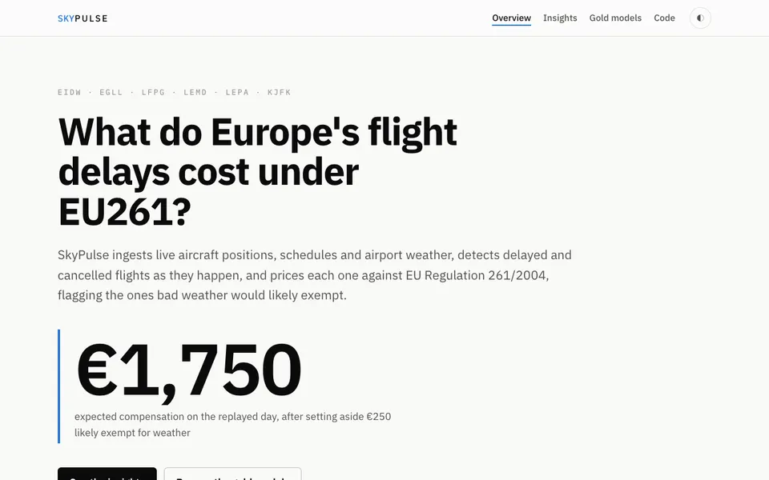

01 · Data platform
SkyPulse
Real-time flight disruption and EU261 exposure platform for European air traffic. Ingests live aircraft positions, schedules and airport weather, detects delays and cancellations as they happen and prices each one against EU Regulation 261/2004.
- Streaming pipeline into a Delta Lake bronze/silver/gold lakehouse
- Fully tested EU261 rules engine with METAR weather exemptions
- Delay prediction model tracked in MLflow and served over FastAPI
- Runs locally on docker-compose + LocalStack, deploys to AWS with Terraform
Python
Kafka / Kinesis
Spark
dbt
Airflow
Terraform